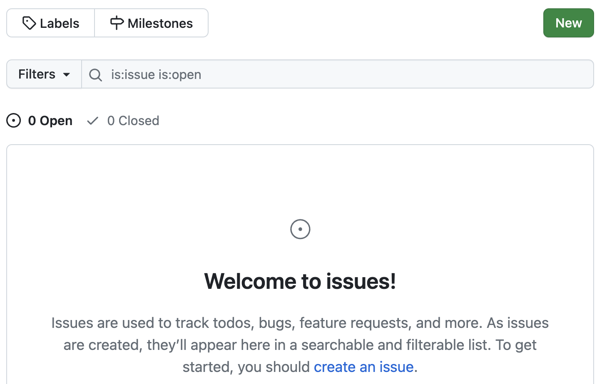
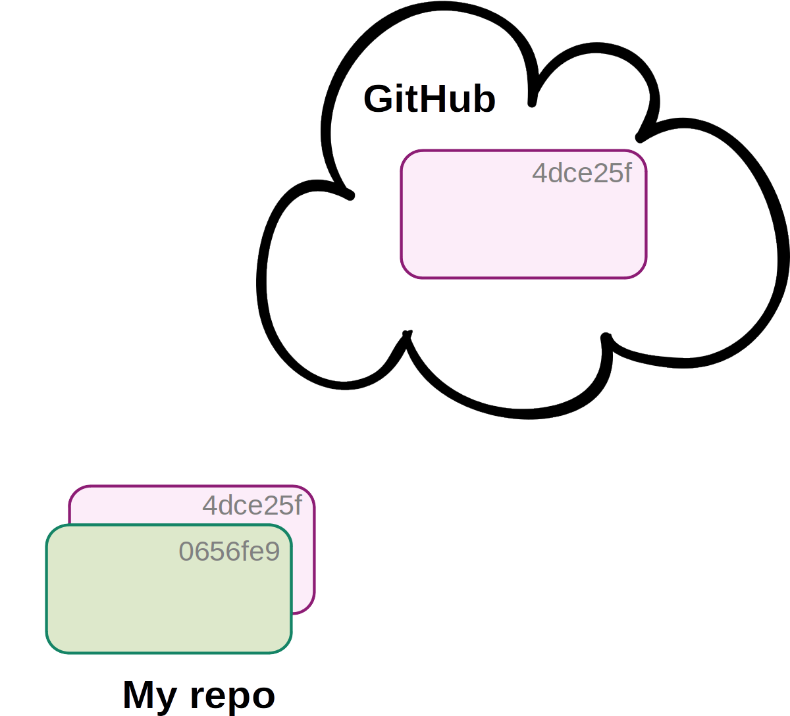
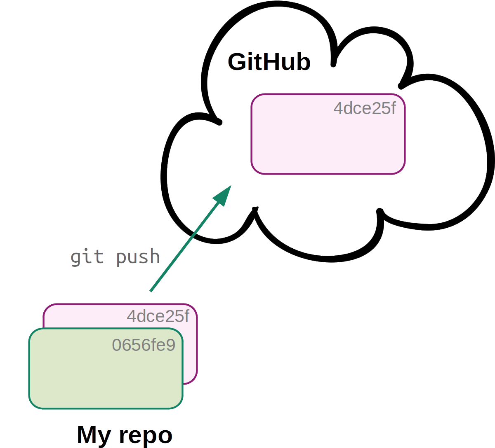

Git: Remotes on GitHub
Overview of this tutorial
- Creating and exploring repositories on GitHub
- Setting up GitHub authentication
- Single-user remote repo workflows
- Launch VS Code at https://ondemand.osc.edu as before, at the dir
/fs/ess/PAS2700/users/$USER, and open a terminal. - Load the OSC Git module1: run
module load git/2.39.0. - In the terminal,
cdto yourweek03/originspeciesdir.
1 Remote repositories
So far, we have been locally version-controlling our originspecies repository. Now, we also want to put this repo online, so we can:
- Share our work (e.g. alongside a publication) and/or
- Have an online backup and/or
- Collaborate with others
We will use the GitHub website as the place to host our online repositories. Online counterparts of local repositories are usually referred to as “remote repositories” or simply “remotes”.
Using remote repositories will mean adding a couple of Git commands to our toolbox:
git remoteto add and manage connections to remotes.git pushto upload (“push”) changes from local to remote.git pullto download (“pull”) changes from remote to local.
But we will need to start with some one-time setup to enable GitHub authentication.
1.1 One-time setup: GitHub authentication
In order to link your local Git repositories to their online counterparts on GitHub, you need to set up GitHub authentication. There are two options for this (see the box below) but we will use SSH access with an SSH key.
Use the
ssh-keygencommand to generate a public-private SSH key pair — in the command below, replaceyour_email@example.comwith the email address you used to sign up for a GitHub account:ssh-keygen -t ed25519 -C "your_email@example.com"You’ll be asked three questions, and for all three, you can accept the default simply by pressing Enter:
# Enter file in which to save the key (<default path>): # Enter passphrase (empty for no passphrase): # Enter same passphrase again:Generating public/private ed25519 key pair. Enter file in which to save the key (/users/PAS0471/jelmer/.ssh/id_ed25519): Enter passphrase (empty for no passphrase): Enter same passphrase again: Your identification has been saved in /users/PAS0471/jelmer/.ssh/id_ed25519. Your public key has been saved in /users/PAS0471/jelmer/.ssh/id_ed25519.pub. The key fingerprint is: SHA256:KO73cE18HFC/aHKIXR7nf9Fk4++CiIw6GTk7ffG+p2c your_email@example.com The key's randomart image is: +--[ED25519 256]--+ | ... | | . . | | + o.o| | . + = *.+o| | ... S * B oo.| | .+. .o = .o| | .*.o.+.. . +| | .= +o+ o E ...| | o= o..+* ..| +----[SHA256]-----+Now, you have a file
~/.ssh/id_ed25519.pub, which is your public key. To enable authentication, you will put this public key (which interacts with your private key) on GitHub. Print the public key to your screen usingcat:cat ~/.ssh/id_ed25519.pubssh-ed25519 AAAAC3NzaC1lZDI1NTE5AAAAIBz4qiqjbNrKPodoGyoF/v7n0GKyvc/vKiW0apaRjba2 your_email@example.comCopy the line that was printed to screen to your clipboard.
In your browser, go to https://github.com and log in.
Go to your personal Settings. (Click on your avatar in the far top-right of the page, then select “Settings”.)
Click on
SSH and GPG keysin the sidebar.Click the green
New SSH keybutton.In the form (see screenshot below):
- Give the key an arbitrary, informative “Title” (name), e.g. “OSC” to indicate that you will use this key at OSC.
- Paste the public key, which you copied to your clipboard earlier, into the “Key” box.
- Click the green
Add SSH keybutton. Done!
The current two options to authenticate to GitHub when connecting with remotes are:
SSHaccess with an SSH key (which we have just set up)HTTPSaccess with a Public Access Token (PAT). See this GitHub page to set this up instead of or in addition to SSH access.
For everything on GitHub, there are separate SSH and HTTPS URLs. When using SSH (as we are), we need to use URLs with the following format:
git@github.com:<USERNAME>/<REPOSITORY>.git(And when using HTTPS, you would use URLs like https://github.com/<USERNAME>/<REPOSITORY>.git)
1.2 Create a remote repository
While we can interact with online repos using Git commands, we can’t create a new online repo with the Git CLI. Therefore, we will to go to the GitHub website to create a new online repo:
- On the GitHub website, click the
+next to your avatar (top-right) and select “New repository”:
- In the box “Repository name”, we’ll use the same name that we gave to our local directory:
originspecies2.
- Leave other options as they are, as shown below, and click “Create repository”:
1.3 Link the local and remote repositories
After you clicked “Create repository”, a page similar to this screenshot should appear, which gives us some information about linking the remote and local repositories:

We go back to VS Code, where we’ll enter the commands that GitHub provided to us under the “…or push an existing repository from the command line” heading shown at the bottom of the screenshot above:3
First, we tell Git to add a “remote” connection with
git remote, providing three arguments to this command:add— because we’re adding a remote connection.origin— the arbitrary nickname we’re giving the connection (usually called “origin” by convention).
- The URL to the GitHub repo (in SSH format: click on the
HTTPS/SSHbutton to toggle the URL type).
# git remote add <remote-nickname> <URL> git remote add origin git@github.com:<user>/originspecies.gitSecond, we upload (“push”) our local repo to remote using
git push. When we push a repository for the first time, we need to use the-uoption to set up an “upstream” counterpart:# git push -u <connection> <branch> git push -u origin mainYou should then get a message like this: type
yesand press Enter.The authenticity of host 'github.com (140.82.114.4)' can't be established. ECDSA key fingerprint is SHA256:p2QAMXNIC1TJYWeIOttrVc98/R1BUFWu3/LiyKgUfQM. ECDSA key fingerprint is MD5:7b:99:81:1e:4c:91:a5:0d:5a:2e:2e:80:13:3f:24:ca. Are you sure you want to continue connecting (yes/no)?Then, the push/upload should go through, with a message along these lines printed to screen:
Counting objects: 18, done. Delta compression using up to 40 threads. Compressing objects: 100% (12/12), done. Writing objects: 100% (18/18), 1.67 KiB | 0 bytes/s, done. Total 18 (delta 1), reused 0 (delta 0) remote: Resolving deltas: 100% (1/1), done. remote: To git@github.com:jelmerp/originspecies2.git * [new branch] main -> main
Note that when we don’t give git push any arguments, it will push:
- To the default remote connection.
- To & from the currently active repository “branch” (default:
main)4.
Because we only have one remote connection and one branch, we can from now on simply use the following to push:
git pushAlso, note that you can check your remote connection settings for a repo with git remote -v:
git remote -vorigin git@github.com:jelmerp/originspecies.git (fetch)
origin git@github.com:jelmerp/originspecies.git (push)1.4 Explore the repository on GitHub
Back at GitHub on your repo page, click where it says <> Code in the lower of the top bars:
This is basically our repo’s “home page”, and we can see the files that we just uploaded from our local repo:
Next, click where it says x commits (x should be 10 in this case):
You’ll get an overview of the commits that you made, somewhat similar to what you get when you run git log:
You can click on a commit to see the changes that were made by it:
On the right-hand side, a < > button will allow you to see the state of the repo at the time of that commit:
On the commit overview page, scroll down all the way to the first commit and click the < >: you’ll see the repo’s “home page” again, but now with only the origin.txt file, since that was the only file in your repo at the time:
GitHub “Issues”
Each GitHub repository has an “Issues” tab — issues are mainly used to track bugs and other (potential) problems with a repository. In an issue, you can reference specific commits and people, and use Markdown formatting.
To go to the Issues tab for your repo, click on Issues towards the top of the page:
And you should see the following page — in which you can open a new issue with the “New” button:

2 Remote repo workflows: single-user
In a single-user workflow, all changes are typically made in the local repository, and the remote repo is simply periodically updated (pushed to). So, the interaction between local and remote is unidirectional:

When pushing to remote for the first time, you first set up the connection with
git remote and use the u option to git push.
Now, the local (“My repo”) and remote (“GitHub”) are in sync.

Next, you’ve made a new commit locally: the local and remote are out of sync.

You simply use
git push to update the remote, after which the local and remote will be back in sync (latter not shown).In a single-user workflow with a remote, you commit just like you would without a remote in your day-to-day work, and in addition, push to remote occasionally — let’s run through an example.
Start by creating a
README.mdfile for your repo:echo "# Origin" > README.md echo "Repo for book draft on my new **theory**" >> README.mdAdd and commit the file:
git add README.md git commit -m "Added a README file"[main 63ce484] Added a README file 1 file changed, 2 insertions(+) create mode 100644 README.mdIf you now run
git status, you’ll see that Git knows that your local repo is now one commit “ahead” of its remote counterpart:On branch main Your branch is ahead of 'origin/main' by 1 commit. (use "git push" to publish your local commits) nothing to commit, working tree cleanBut Git will not automatically sync. So now, push to the remote repository:
git pushCounting objects: 4, done. Delta compression using up to 40 threads. Compressing objects: 100% (3/3), done. Writing objects: 100% (3/3), 404 bytes | 0 bytes/s, done. Total 3 (delta 0), reused 0 (delta 0) remote: To git@github.com:jelmerp/originspecies.git 4968e62..b1e6dad main -> main
Let’s go back to GitHub: note that the README.md Markdown has been automatically rendered!
The version control bonus page goes into collaboration with Git and Github, i.e. multi-user workflows.
Footnotes
Note that Git is available at OSC even without loading this module, but that’s a much older version.↩︎
Though note that these names don’t have to match up.↩︎
Though we can skip the second one,
git branch -M main, since our branch is already called “main”.↩︎To learn more about branches, see the Git bonus material.↩︎